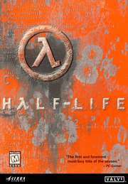

 |
|
| Tiempo de juego | No Jugado |
| Última actividad | Nunca |
| Añadido | 20/11/2025 14:13:34 |
| Modificado | 20/11/2025 14:14:28 |
| Estado de finalización | Not Played |
| Librería | Playnite |
| Fuente | 2TB GAS |
| Plataforma | Macintosh PC (Linux) PC (Windows) Sony PlayStation 2 |
| Fecha de lanzamiento | 19/11/1998 |
| Puntuación de la Comunidad | |
| Puntuación de la Crítica | 92 |
| Puntuación de usuario | |
| Género | First-person shooter |
| Desarrollador | Valve |
| Editor | Sierra Studios |
| Característica | Multiplayer Single-player |
| Enlaces | Wikipedia Official website |
| Tag | [Game Engine] GoldSrc [People] composer: Kelly Bailey [People] writer: Marc Laidlaw |
Half-Life is a 1998 first-person shooter game developed by Valve Corporation and published by Sierra Studios for Windows. It was Valve's debut product and the first game in the Half-Life series. The player assumes the role of Gordon Freeman, a scientist who must escape from the Black Mesa Research Facility after it is overrun by alien creatures following a disastrous scientific experiment. The gameplay consists of combat, exploration and puzzles.
Valve was disappointed with the lack of innovation in the FPS genre, and aimed to create an immersive world rather than a "shooting gallery". Unlike other games at the time, the player has almost uninterrupted control of the player character; the story is mostly experienced through scripted sequences rather than cutscenes. Valve developed the game using GoldSrc, a heavily modified version of the Quake engine, licensed from id Software. The science fiction novelist Marc Laidlaw was hired to craft the plot and assist with design.
Half-Life received acclaim for its graphics, gameplay and narrative and won more than 50 PC "Game of the Year" awards. It is considered one of the most influential first-person shooter games and one of the greatest video games. By 2008, it had sold more than nine million copies. It was ported to the PlayStation 2 in 2001, along with the multiplayer expansion Decay, and to OS X and Linux in 2013. Valve ported Half-Life to its game engine, Source, as Half-Life: Source in 2004. In 2020, Black Mesa was released, an unofficial fan-made remake of Half-Life developed by Crowbar Collective using the Source engine.
Half-Life inspired numerous fan-made mods, some of which became standalone games, such as Counter-Strike (2000), Day of Defeat (2003), and Sven Co-op (1999). It was followed by the expansion packs Opposing Force (1999) and Blue Shift (2001), developed by Gearbox Software, and the sequels Half-Life 2 (2004), Episode One (2006), Episode Two (2007) and Half-Life: Alyx (2020).
Half-Life is a first-person shooter that requires the player to perform combat tasks and puzzle solving to advance through the game. Unlike most first-person shooters at the time, which relied on cut-scene intermissions to detail their plotlines, Half-Life's story is told mostly using scripted sequences (bar one short cutscene), keeping the player in control of the first-person viewpoint. In line with this, the player rarely loses the ability to control the player character, Gordon Freeman, who never speaks and is never actually seen in the game; the player sees "through his eyes" for the entire length of the game. Half-Life has no levels; it instead divides the game into chapters, whose titles briefly appear on screen as the player progresses through the game. With the exception of short loading pauses, progression throughout the game is continuous, with each map directly connecting to the next, although levels with teleportation are an exception.
The game regularly integrates puzzles, such as navigating a maze of conveyor belts or using nearby boxes to build a small staircase to the next area the player must travel to. Some puzzles involve using the environment to kill an enemy, like turning a valve to spray hot steam at their enemies. There are few bosses in the conventional sense, where the player defeats a superior opponent by direct confrontation. Instead, such organisms occasionally define chapters, and the player is generally expected to use the terrain, rather than firepower, to kill the boss. Late in the game, the player receives a "long jump module" for the HEV suit, which allows the player to increase the horizontal distance and speed of jumps by crouching before jumping. The player must rely on this ability to navigate various platformer-style jumping puzzles in Xen toward the end of the game.
The player battles alone for the majority of the game, but is occasionally assisted by non-player characters; specifically security guards and scientists who help the player. The guards will fight alongside the player, and both guards and scientists can assist in reaching new areas and pass on relevant plot information. An array of alien enemies populate the game, including headcrabs, bullsquids, vortigaunts, and headcrab zombies. The player also faces hostile human soldiers and Black Ops assassins. Half-Life includes online multiplayer support for both individual and team-based deathmatch modes. It was one of the first mainstream games to use the WASD keys as the default control scheme.
At the underground Black Mesa Research Facility, the theoretical physicist Gordon Freeman participates in an experiment on a crystal of unknown origin. This triggers a "resonance cascade", which greatly damages the facility and teleports in hostile alien creatures through a portal between the Xen and Earth dimensions. Venturing to the surface, Freeman discovers U.S. federal government soldiers have been dispatched to cover up the incident by killing humans and aliens alike. A scientist instructs him to make his way to the Lambda Complex to stop the alien invasion.
Freeman kills a giant creature inside a rocket engine test facility and uses an underground monorail to reach a rocket silo. He launches a satellite to help the Lambda team close the portal, but is captured by soldiers and left for dead in a trash compactor. Escaping through a waste treatment complex, Freeman travels through a part of Black Mesa filled with alien specimens, collected long before the resonance cascade.
Overpowered by the aliens, the soldiers withdraw. Freeman fights across the rest of the facility to reach the Lambda Complex, where he discovers secret teleportation technology. There, scientists inform him that the satellite launched earlier didn't work to stop the cascade due to a powerful alien creature preventing them from closing the portal. They teleport him to the alien dimension Xen to kill it.
Freeman encounters dead scientists who teleported there before him. He kills a large alien, the Gonarch, and finds a factory that manufactures alien soldiers. Finally, he enters the Nihilanth's lair and kills it. Freeman is detained by the G-Man, a mysterious interdimensional agent who claims his "employers" wish to hire Freeman. If he accepts, Freeman is placed into stasis; if not, he is teleported to his death.
Valve, based in Kirkland, Washington, U.S., was founded in 1996 by the former Microsoft employees Gabe Newell and Mike Harrington. For their first product, Valve settled on a concept for a horror first-person shooter (FPS) game. They did not want to build their own game engine, as this would have created too much work for a small team and Newell planned to innovate in different areas. Instead, Valve licensed the Quake engine and the Quake II engine from id Software and combined them with their own code. Newell estimated that around 75% of the final engine code was by Valve. As the project expanded, Valve cancelled development of a fantasy role-playing game, Prospero, and the Prospero team joined the Half-Life project.
Half-Life was inspired by the FPS games Doom (1993) and Quake (1996),: 9, 11 Stephen King's 1980 novella The Mist, and a 1963 episode of The Outer Limits titled "The Borderland". According to the designer Harry Teasley, Doom was a major influence and the team wanted Half-Life to "scare you like Doom did". The project had the working title Quiver, after the Arrowhead military base from The Mist. The name Half-Life was chosen because it was evocative of the theme, not clichéd, and had a corresponding visual symbol: the Greek letter λ (lower-case lambda), which represents the decay constant in the half-life equation.: 31 According to the designer Brett Johnson, the level design was inspired by environments in the manga series Akira.
Valve struggled to find a publisher, as many believed the game was too ambitious for a first-time developer. Sierra On-Line signed Valve for a one-game deal as it was interested in making a 3D action game, especially one based on the Quake engine. Sierra gave Valve an advance of around $1 million in exchange for 30% of the revenue and 100% of the intellectual property; the rest of development was funded by Newell and Harrington. Valve first showed Half-Life in early 1997; it was a success at E3 that year, where Valve demonstrated the animation and artificial intelligence. Novel features of the artificial intelligence included fear and pack behavior.
Valve aimed for a November 1997 release to compete with Quake II. By September 1997, the team found that, while they had built some innovative aspects in weapons, enemies, and level design, the game was not fun and there was little design cohesion. Playtesting produced "lukewarm" responses. Sierra would not agree to extra funding, so Newell took out a loan to fund additional development to rework the game.
Valve took a novel approach of assigning a small team to build a prototype level containing every element in the game and then spent a month iterating on the level. When the rest of the team played the level, which the designer Ken Birdwell described as "Die Hard meets Evil Dead", they agreed to use it as a baseline. The team developed three theories about what made the level fun. First, it had several interesting things happen in it, all triggered by the player rather than a timer so that the player would set the pace of the level. Second, the level responded to any player action, even for something as simple as adding graphic decals to wall textures to show a bullet impact. Finally, the level warned the player of imminent danger to allow them to avoid it, rather than killing the player with no warning.
To move forward with this unified design, Valve sought a game designer but found no one suitable. Instead, Valve created the "cabal", initially a group of six individuals from across all departments that worked primarily for six months straight in six-hour meetings four days a week. The cabal was responsible for all elements of design, including level layouts, key events, enemy designs, narrative, and the introduction of gameplay elements relative to the story. The collaboration proved successful, and once the cabal had come to decisions on types of gameplay elements that would be needed, mini-cabals from other departments most affected by the choice were formed to implement these elements. Membership in the main cabal rotated since the required commitment created burnout.
The cabal produced a 200-page design document detailing nearly every aspect of the game. They also produced a 30-page document for the narrative, and hired the science fiction novelist Marc Laidlaw to help manage the script. Laidlaw said his contribution was to add "old storytelling tricks" to the team's ambitious designs: "I was in awe of [the team]. It felt to me like I was just borrowing from old standards while they were the ones doing something truly new." Rather than dictate narrative elements "from some kind of ivory tower of authorial inspiration", he worked with the team to improvise ideas, and was inspired by their experiments. For example, he conceived the opening train ride after an engineer implemented train code for another concept.
Valve initially planned to use traditional cutscenes, but switched to a continuous first-person perspective for lack of time. Laidlaw said they discovered unexpected advantages in this approach, as it created a sense of immersion and enforced a sense of loneliness in a frightening environment. Laidlaw felt that non-player characters were unnecessary to guide players if the design had sufficiently strong "visual grammar", and that this allowed the characters to "feel like characters instead of signposts". An early version of Half-Life began immediately after the disaster, with the environments already wrecked. Laidlaw worked with Johnson to create versions of the lab environment before the disaster to help set the story. He said: "These were all economical ways of doing storytelling with the architecture—which was my whole obsession. The narrative had to be baked into the corridors."
Within a month of the cabal's formation, the other team members started detailed game development, and within another month began playtesting through Sierra. The cabal was intimately involved with playtesting, monitoring the player but otherwise not interacting. They noted any confusion or inability to solve a game's puzzles and made them into action items to be fixed on the next iteration. Later, with most of the main adjustments made, the team included means to benchmark players' actions. They then collected and interpreted statistically to fine-tune levels further. Between the cabal and playtesting, Valve identified and removed parts that proved unenjoyable. Birdwell said that while there were struggles at first, the cabal approach was critical for Half-Life's success, and was reused for Team Fortress 2 from the start.
Much of the detail of Half-Life's development has been lost. According to Valve employee Erik Johnson, two or three months before release, their Visual SourceSafe source control system "exploded". Logs of technical changes from before the final month of development were lost, and code had to be recovered from individual computers. The revised version of Half-Life shown at E3 1998 received the Game Critics Awards for "Best PC Game" and "Best Action Game".
To promote Half-Life, Valve's chief marketing officer, Monica Harrington, promoted Valve's reputation in the industry, with conference talks about their advances in game development, leading to coverage in the Wall Street Journal. Half-Life was released on November 19, 1998. When Sierra told Valve it was not planning to promote it beyond launch, Harrington threatened that Valve would "walk away from our agreement and tell the industry that had fallen in love with Valve how screwed up Sierra really was". In response, Sierra reissued Half-Life in a "Game of the Year" edition, boosting sales. In 2001, after renegotiating with Sierra, Valve gained the Half-Life intellectual property and online distribution rights for its games.
Valve released two Half-Life demos. The first, Half-Life: Day One, contained the first fifth of the game and was distributed with certain graphic cards. The second, Half-Life: Uplink, was released on February 12, 1999, and featured original content. A short film based on Half-Life, also titled Half-Life: Uplink, was developed by Cruise Control, a British marketing agency, and released on February 11. The protagonist is a journalist who infiltrates the Black Mesa Research Facility, trying to discover what has happened there.
Half-Life was censored in Germany to comply with the Federal Department for Media Harmful to Young Persons, which regulates depictions of violence against humans. Valve replaced the human characters with robots, spilling oil and gears instead of blood and body parts when killed, among other changes. In 2017, Half-Life was removed from the German censorship list. To acknowledge this, Valve released Half-Life Uncensored, a free downloadable content pack, that reverts the censorship.
Valve canceled a port of Half-Life for MacOS, developed by Logicware, in 2000. Newell said the port was substandard and would have made Mac players "second-class customers". Rebecca Heineman, the co-founder of Logicware, denied this, saying that Valve cancelled the port as Apple had angered them by misrepresenting sales projections. She said the port was complete and three weeks from release. Valve released ports for OS X and Linux in 2013.
Captivation Digital Laboratories and Gearbox Software developed a port of Half-Life for the Dreamcast, with new character models and textures and an exclusive expansion, Blue Shift. Following the cancellations of several third-party games in the wake of Sega's decision to discontinue the Dreamcast in March 2001, Sierra cancelled the port weeks before its scheduled release in June, citing "changing marketing conditions". Blue Shift was ported to Windows. The Dreamcast port became the basis of the Half-Life port for PlayStation 2, released in late 2001. This version added competitive play and a co-op expansion, Half-Life: Decay.[38]
In 2004, Valve released Half-Life: Source, a version of Half-Life ported to their new game engine, Source. It adds ragdoll physics, advanced water effects, and 5.1 surround sound. At launch, it received mediocre reviews for its lack of significant gameplay and visual enhancements, although IGN still recommended it. Retrospective reception has been more negative, owing to the game's instability and frequent glitches. The deathmatch mode was ported to Source separately in 2006 as Half-Life Deathmatch: Source. Following the release of the Half-Life 25th anniversary update in 2023, both ports were delisted from Steam and do not appear in its search results. Black Mesa, a third-party remake of Half-Life developed by Crowbar Collective on the Source engine, was published as a free mod in September 2012 and later approved by Valve for a commercial standalone release.
In November 2023, for the 25th anniversary of Half-Life, Valve updated the Steam version to revert content to its original 1998 state, fix long-standing bugs, and add content including the Half-Life: Uplink demo, four new multiplayer maps, Steam Deck support, rendering improvements, and support for 4K resolution monitors. Valve also released an hour-long documentary on the creation of Half-Life, featuring commentary from the original developers, designers and artists. Two days after the release, Half-Life reached 33,471 concurrent players on Steam, its highest-ever number.
Half-Life received support from independent game developers, supported and encouraged by Valve. With the game, Valve included Worldcraft, the level design tool used during development, and a software development kit, enabling developers to create mods. Both tools were updated with the release of the patch 1.1.0.0. Supporting tools (including texture editors, model editors, and level editors such as the multiple engine editor QuArK) were either created or updated to work with Half-Life.[citation needed]
The Half-Life software development kit served as the development base for many mods, including the Valve-developed Team Fortress Classic and Deathmatch Classic (a remake of Quake's multiplayer deathmatch mode in the GoldSrc engine). Other mods such as Counter-Strike and Day of Defeat (DOD) began life as the work of independent developers who later received aid from Valve. Other multiplayer mods include Firearms, Natural Selection and Sven Co-op. Single-player mods include USS Darkstar (1999, a futuristic action-adventure on board a zoological research spaceship) and They Hunger (2000–2001, a survival horror total conversion trilogy involving zombies). To promote the 2003 film Underworld, Sony Pictures commissioned video game developer Black Widow Games to develop a promotional tie-in mod titled Underworld: Bloodline. The mod was available on Sony Pictures' official website until the end of 2007 and remains the only officially licensed Half-Life mod tied to a Hollywood film.
Some Half-Life modifications received retail releases. Counter-Strike was the most successful, having been released in six different editions: as a standalone product (2000), as part of the Platinum Pack (2000), as an Xbox version (2003), and as a single-player spin-off, Counter-Strike: Condition Zero (2004), as well as in two versions using the Source engine. Team Fortress Classic, Day of Defeat, Gunman Chronicles (2000, a futuristic Western movie-style total conversion with emphasis on its single-player mode) and Sven Co-op were also released as standalone products. Half-Life is also the subject of the YouTube improv roleplaying series Half-Life VR but the AI is Self-Aware and Freeman's Mind.
In 2003, Valve's network was infiltrated by hackers. Among the stolen files was the unreleased Half-Life mod Half-Life: Threewave, a canceled remake of the Quake mod Threewave CTF. The files were found by fans on a Vietnamese FTP server in February 2016 and unofficially distributed that September.
Half-Life received critical acclaim by reviewers. On the review aggregation website Metacritic, Half-Life has a score of 96 out of 100, indicating "universal acclaim". Computer Gaming World's Jeff Green said it was "not just one of the best games of the year. It's one of the best games of any year, an instant classic that is miles better than any of its immediate competition, and—in its single-player form—is the best shooter since the original Doom." Next Generation wrote: "It is fast paced, it is dramatic, and it brings the very idea of adventure on a PC out of the dark ages and into a 3D world. All that and not a single Orc in sight." IGN described it as "a tour de force in game design, the definitive single player game in a first-person shooter". GameSpot said it was the "closest thing to a revolutionary step the genre has ever taken".
Several reviewers cited the level of immersion and interactivity as revolutionary. AllGame said, "It isn't everyday that you come across a game that totally revolutionizes an entire genre, but Half-Life has done just that." Hot Games commented on the realism, and how the environment "all adds up to a totally immersive gaming experience that makes everything else look quite shoddy in comparison". Gamers Depot wrote that it was the most immersive game they had played.
The final portion of the game, taking place in the alien world of Xen, was generally considered the weakest. Besides introducing a wholly new and alien setting, it also featured a number of low-gravity jumping puzzles. The GoldSrc engine did not provide as much precise control for the player during jumping, making these jumps difficult and often with Freeman falling into a void and the player restarting the game. Wired's Julie Muncy called the Xen sequence "an abbreviated, unpleasant stop on an alien world with bad platforming and a boss fight against what appeared, by all accounts, to be a giant floating infant". The Electric Playground said that Half-Life was an "immersive and engaging entertainment experience" in its first half and that it "peaked too soon".
During the AIAS' 2nd Annual Interactive Achievement Awards, Half-Life was awarded "Computer Entertainment Title of the Year" and "PC Action Game of the Year"; it also received nominations for "Game of the Year" and outstanding achievement in "Art/Graphics", "Character or Story Development", "Interactive Design", and "Software Engineering".
Jeff Lundrigan reviewed the PlayStation 2 version for Next Generation, rating it three out of five, and wrote that "it may be getting old, but there's still a surprising amount of life in Half-Life". The PlayStation 2 version was a nominee for The Electric Playground's 2001 Blister Awards for "Best Console Shooter Game", but lost to Halo: Combat Evolved for Xbox.
In 1999, 2001, and 2005, PC Gamer named Half-Life the best PC game of all time. In 2004, GameSpy readers voted Half-Life the best game of all time. Gamasutra gave it their Quantum Leap Award in the FPS category in 2006. GameSpot inducted Half-Life into their Greatest Games of All Time list in May 2007. In 2007, IGN described Half-Life as one of the most influential video games, and in 2013 wrote that the history of the FPS genre "breaks down pretty cleanly into pre-Half-Life and post-Half-Life eras". In 2021, the Guardian ranked Half-Life the third-greatest game of the 1990s, writing that it "helped write the rulebook for how games tell their stories without resorting to aping the conventions of film".
According to Newell, Half-Life was budgeted with the expectation of lifetime sales of around 180,000 copies. However, it was a surprise hit. In the United States, Half-Life debuted at #8 on PC Data's weekly PC game sales chart for the November 15–21 period, with an average retail price (ARP) of $49. It rose to sixth place the following week, before dropping to position 10 for the week ending December 5. During the December 6–12 period, the game climbed back to sixth place; by this time, its ARP had dropped to $36. It placed between sixth and eighth on PC Data's weekly charts through the end of December, and its ARP rose back to $45 by the week ending January 2. PC Data declared Half-Life November's sixth-best-selling PC game in the United States, a position it held for the month of December. While its U.S. sales were below 100,000 copies by November 30, it sold 212,173 copies and earned revenues of $8.6 million in the United States by the end of 1998.
In January 1999, Half-Life debuted at #3 on Chart-Track's PC game sales rankings for the United Kingdom, and remained in PC Data's weekly top 10 for the entire month, peaking at #4. By January 19, after two full months of availability, global sales of Half-Life surpassed 500,000 units. In the United States, it was the fifth-best-selling PC game for the month of January. On PC Data's weekly charts, it rose to #2 from February 7–20, with an ARP of $35. Holding a position in the weekly top 10 for the rest of February, it climbed to fourth for the month. The game remained in PC Data's weekly top 10 until the week of March 21 and dropped to position 11 for March as a whole. In the United Kingdom, it placed second in February—behind the debut of Baldur's Gate—and fifth in March. In April, it claimed #3 on Chart-Track's rankings and dropped to #16 on those of PC Data. On April 23, Sierra announced that global sales of Half-Life had reached almost 1 million copies.
After maintaining the 16th place for May in the U.S., Half-Life exited PC Data's monthly top 20 in June. Half-Life became the fifth-best-selling PC game of the first half of 1999 in the U.S. Its domestic sales during 1999 reached 290,000 copies by the end of September. During 1999, it was the fifth-best-selling PC game in the U.S., with sales of 445,123 copies. These sales brought in revenues of $16.6 million, the sixth-highest gross that year for a PC game in the U.S. The following year, it was the 16th-best-selling PC game in the U.S., selling another 286,593 copies and earning $8.98 million.
The PlayStation 2 version received a "Silver" sales award from the Entertainment and Leisure Software Publishers Association (ELSPA), indicating sales of at least 100,000 copies in the United Kingdom. Half-Life's global sales reached 2.5 million units by July 2001. Edge noted in 2003 that "a significant number of the 7.5m copies of the PC version were bought because the game offered such potential for community-driven expansion". As of November 16, 2004, eight million copies of the game had been sold, and by 2008, 9.3 million copies had been sold at retail. Guinness World Records awarded Half-Life the world record for Best-Selling First-Person Shooter of All Time (PC) in the Guinness World Records: Gamer's Edition 2008.
Half-Life was followed by an expansion pack, Opposing Force, on November 1, 1999, developed by Gearbox Software. Players control Hazardous Environment Combat Unit (HECU) Corporal Adrian Shephard, who fights a new group of aliens called Race X and Black Ops units after being split from his team. Gearbox developed a second expansion pack, Blue Shift, in which players control Barney Calhoun, a security guard at Black Mesa, as he attempts to escape the facility. It was developed as a bonus campaign for the Dreamcast port of Half-Life, but was released for Windows on June 12, 2001, after the port was canceled. Gearbox created a cooperative multiplayer expansion pack, Decay, exclusively for the PlayStation 2 port of Half-Life which is played through the perspectives of Gina Cross and Colette Green, two Black Mesa scientists.
Half-Life 2 was announced at E3 2003 and released in 2004. The player controls Freeman 20 years after the Black Mesa incident in the dystopian City 17, where he joins a rebellion against an alien regime. It was followed by the episodic sequels Half-Life 2: Episode One (2006) and Half-Life 2: Episode Two (2007). After cancelling several other Half-Life projects, Valve released Half-Life: Alyx in 2020.